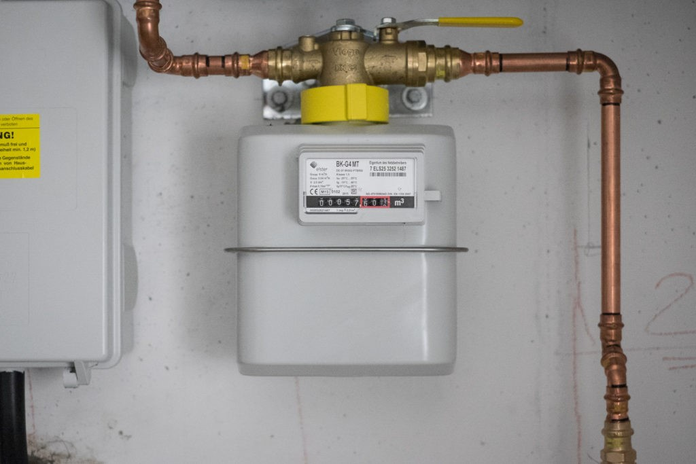
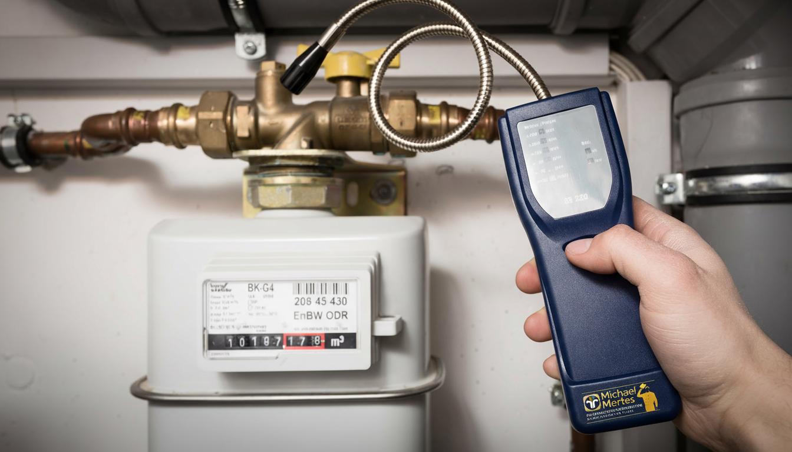

Professionelle Überprüfung Ihrer Gasinstallationen für maximale Sicherheit

Das Wichtigste auf einen Blick
Ab der Hauptabsperreinrichtung (HAE) trägt der Grundstückseigentümer die Verantwortung für die Sicherheit der Gasinstallation – auch wenn das Gebäude vermietet ist.
Die technischen Regeln (TRGI 2018) empfehlen eine jährliche Sichtkontrolle mit Dokumentation, die vom Eigentümer selbst oder einem Fachbetrieb durchgeführt werden kann.
Termin anfragenUnser Angebot
Wir prüfen kostengünstig alle frei verlegten Gasleitungen, Absperreinrichtungen am Hausanschluss und Zähler auf einwandfreien Zustand sowie freie Zugänglichkeit. Auch Be- und Entlüftung bei nachträglich verkleideten Innenleitungen wird kontrolliert.
Kontrolle aller frei verlegten Gasleitungen auf einwandfreien Zustand und freie Zugänglichkeit.
Prüfung der Absperreinrichtungen am Hausanschluss und Zähler auf ordnungsgemäße Funktion.
Kontrolle der Be- und Entlüftung, auch bei nachträglich verkleideten Innenleitungen.
Dokumentation
Sie erhalten ein vollständiges Prüfprotokoll über alle geprüften Leitungen, Geräte und Lüftungsanlagen.
Bei festgestellten Mängeln erhalten Sie eine entsprechende Mängelbescheinigung mit Handlungsempfehlungen.

Ihre Vorteile
Schutz für Eigentümer und Mieter durch frühzeitiges Erkennen von Mängeln.
Schäden werden erkannt, bevor sie zu größeren Problemen führen.
Vermeidung hoher Reparatur- und Folgekosten durch rechtzeitige Kontrolle.
Im Schadensfall sind Sie mit dokumentierter Prüfung rechtlich abgesichert.
Fachlich kompetente Durchführung durch qualifizierten Schornsteinfeger.
Vereinbaren Sie jetzt einen Termin für Ihre Gashausschau und sorgen Sie für die Sicherheit Ihrer Familie und Ihres Eigentums.